Rawat lebih awal,
bukan lebih lambat.
Wearable, aplikasi, AI, dan dokter dalam satu alur — untuk pencegahan penyakit kronis di institusi.
Penyakit kronis tumbuh diam-diam,
jauh sebelum gejala terlihat.
orang dewasa Indonesia hipertensi berdasarkan pengukuran tekanan darah.
RISKESDAS 2018
saja yang pernah terdiagnosis tenaga kesehatan. Sisanya belum tahu.
RISKESDAS 2018
kematian di Indonesia disebabkan penyakit tidak menular.
WHO · PROFIL PTM INDONESIA
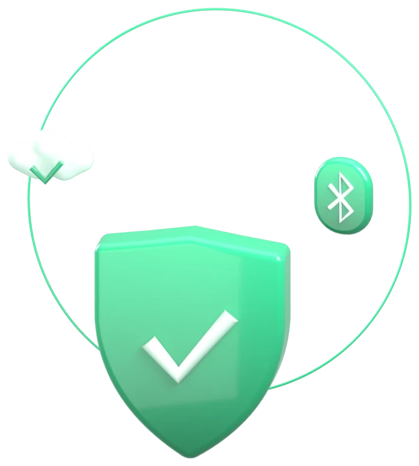
Pemeriksaan berkala datang terlambat.
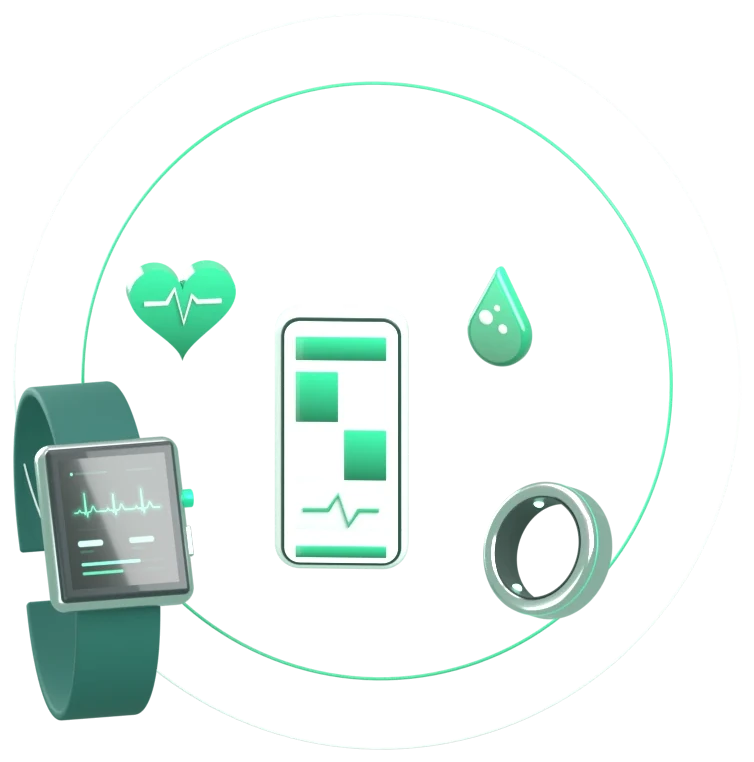
Satu platform dari pergelangan ke dokter.

Wearable TeleBand & TeleRing merekam vital kontinu.

AI menandai pola: indeks stres & status triase.

Telemedisin chat & video call dengan vital terlampir.
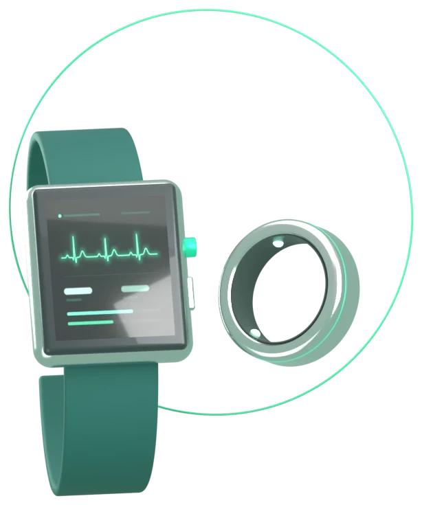
Dua bentuk,
satu ekosistem data.
| Detak jantung & HRV | 30–220 bpm |
| Saturasi oksigen | 70–100 % |
| Suhu kontak kulit | ±0,1 °C |
| EKG lead-I | 250 Hz |
| Tekanan darah (PTT/PPG) | terkalibrasi |
| Konektivitas | BLE 5.x |
Enam sinyal, satu riwayat.
 Detak jantung
Detak jantung& HRV
 SpO₂
SpO₂saturasi oksigen
Suhu tubuhkontak kulit
 EKG
EKGlead-I
 Tekanan darah
Tekanan darahestimasi
 Indeks stres
Indeks stresdari HRV
Setiap ikon adalah objek 3D porselen yang dimodelkan dan dirender lewat Blender CLI — bahasa visual yang sama di aplikasi, situs, video, dan poster.
Vital Anda, jelas sekilas.
Beranda, detail vital, analisis tren, catat makan, dan konsultasi dalam satu aplikasi web yang bisa dipasang.

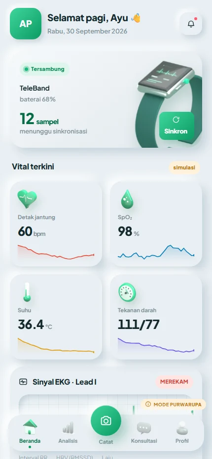
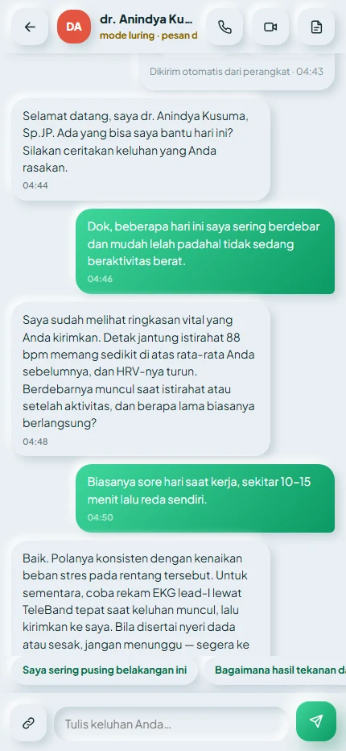
Satu platform, layar untuk tiap tugas.

Pasien
Vital, riwayat, konsultasi
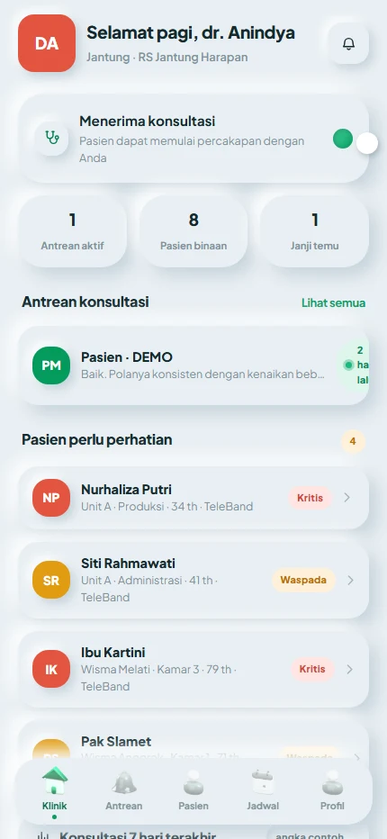
Dokter
Papan jaga, antrean, catatan
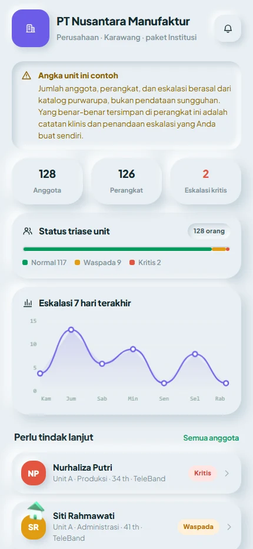
Admin faskes
Anggota berisiko, perangkat
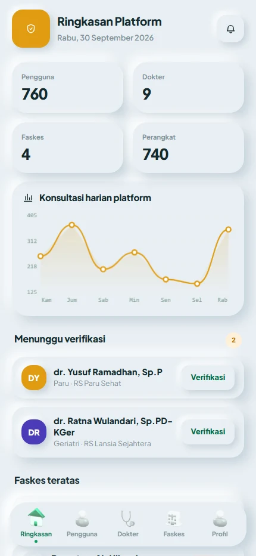
Admin sistem
Pengguna, verifikasi, kalibrasi
Dari pemakaian harian
hingga tindak lanjut klinis.
 01
01Daftar & kalibrasi
Pengguna didaftarkan ke unit, perangkat dikalibrasi ke alat acuan.
02Pantau kontinu
Vital siang-malam dikirim ke gateway lalu ke cloud; tetap merekam saat luring.
03Analisis & triase
Indeks stres serta status Normal, Waspada, atau Kritis per individu.
04Konsultasi
Kasus berisiko diteruskan ke dokter atau psikolog lewat teleconsult.
Empat lapis, edge sampai klinik.
LAPIS 1
Akuisisi
TeleBand & TeleRing (ESP32-C6): PPG, EKG, suhu, IMU, pra-proses on-device.
LAPIS 2
Gateway
Aplikasi web (Web Bluetooth) atau gateway institusi; buffer luring, TLS.
LAPIS 3
Cloud AI
Firebase: basis data deret waktu, mesin inferensi, aturan klinis bertingkat.
LAPIS 4
Tindak lanjut
Dasbor faskes, chat & video call WebRTC, notifikasi, rencana intervensi.
Untuk populasi yang tinggal
dan bekerja bersama.
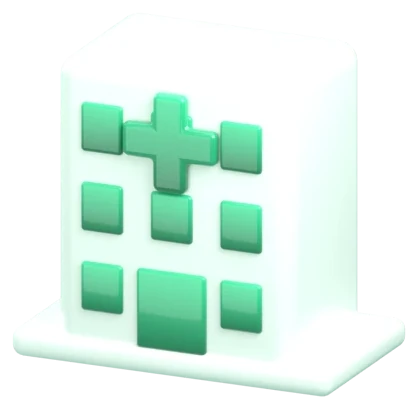
Perusahaan
Kesehatan karyawan, beban kerja, K3 dan absensi.
Pesantren
Asrama padat: deteksi cepat demam dan penurunan saturasi.
Sekolah berasrama
Stres ujian dan kualitas tidur siswa.
Panti wreda
Lansia berisiko kardiovaskular; alarm otomatis ke perawat.

Bertahap, dimulai dari stres.
Pemantauan stres — HRV, detak jantung istirahat, pola tidur, integrasi psikolog.
Vital lengkap — SpO₂, suhu, EKG lead-I dengan eskalasi klinis.
Estimasi tekanan darah — validasi PTT/PPG terhadap alat acuan.
Skala institusi — multi-unit, analitik populasi, laporan berkala.
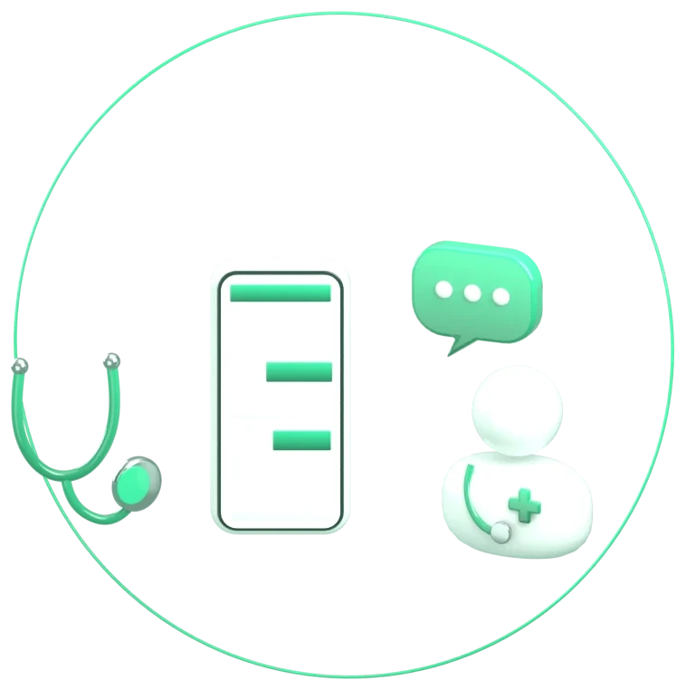
Masuk sebagai tamu.
Tanpa daftar — pilih peran pasien, dokter, atau admin faskes dan jelajahi alurnya.

telecare-id.web.app
Fajar Jelang Riyadi (ketua) · Faizal Tri Widiandika · Sholeh Putra Utama
Pembimbing: Dr. Fuad Anwar, S.Si., M.Si.